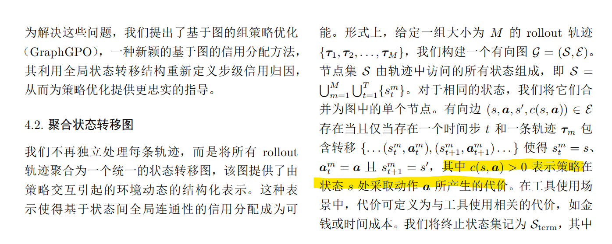
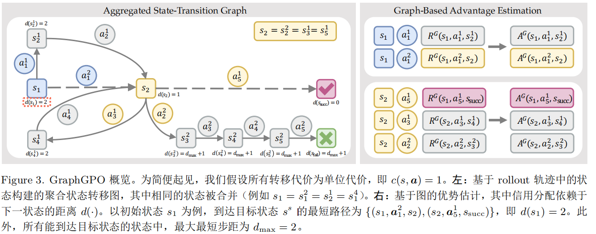
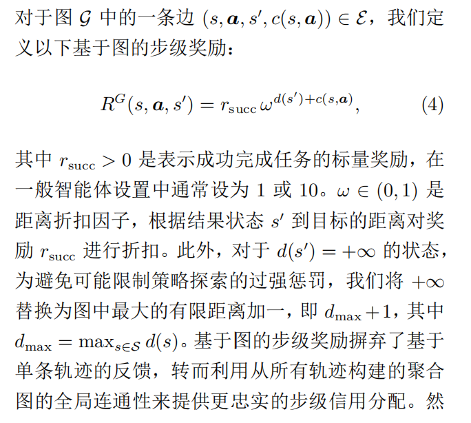
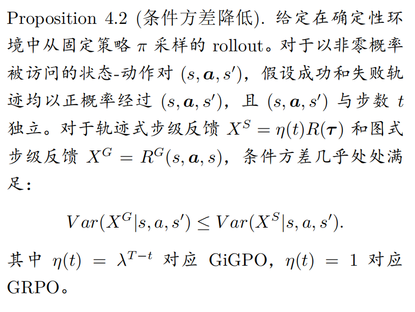

<article class="native-document format-paper" data-format="paper" aria-label="Graph-GPO：基于状态转移图的信用分配">
<header class="document-intro">
<h1 id="graph-gpo-基于状态转移图的信用分配" tabindex="-1">Graph-GPO：基于状态转移图的信用分配 <a class="header-anchor" href="#graph-gpo-基于状态转移图的信用分配" aria-label="Permalink to &quot;Graph-GPO：基于状态转移图的信用分配&quot;">&ZeroWidthSpace;</a></h1>
<h3 id="introduction" tabindex="-1">Introduction <a class="header-anchor" href="#introduction" aria-label="Permalink to &quot;Introduction&quot;">&ZeroWidthSpace;</a></h3>
<p>将rollout轨迹聚合为状态转移图，动作为边。依据转移对缩短到任务目标的距离来分配信用。</p>
<p>这里阐述了一个问题，即失败的trace中也会有相当比例的有用动作，相对的，成功的trace中也会有相当数量的无用或不合适的动作。因此仅根据结果来分配信用是有极大的偏差的。</p>
<h3 id="方法" tabindex="-1">方法 <a class="header-anchor" href="#方法" aria-label="Permalink to &quot;方法&quot;">&ZeroWidthSpace;</a></h3>
<h4 id="trace归因的局限" tabindex="-1">trace归因的局限 <a class="header-anchor" href="#trace归因的局限" aria-label="Permalink to &quot;trace归因的局限&quot;">&ZeroWidthSpace;</a></h4>
<p>如上</p>
<h4 id="聚合状态转移图" tabindex="-1">聚合状态转移图 <a class="header-anchor" href="#聚合状态转移图" aria-label="Permalink to &quot;聚合状态转移图&quot;">&ZeroWidthSpace;</a></h4>
<p></p>
<p>终止状态集包括成功状态以及超出最大长度的状态（即失败）</p>
<p></p>
<h4 id="基于图的优势估计" tabindex="-1">基于图的优势估计 <a class="header-anchor" href="#基于图的优势估计" aria-label="Permalink to &quot;基于图的优势估计&quot;">&ZeroWidthSpace;</a></h4>
<div class="math-block" data-tex="d(s) = \begin{cases}
0, &amp; \text{if } s = s_{\text{succ}}, \\
\min\limits_{(s,a,s',c) \in \mathcal{E}} \left( c(s, \boldsymbol{a}) + d(s') \right), &amp; \text{if } s \rightsquigarrow s_{\text{succ}}, \\
+\infty, &amp; \text{otherwise},
\end{cases}
"></div><p></p>
<p>然后对每个状态的连接边计算组优势。</p>
<p><strong>prop: 优势对距离成本和是单调的。</strong></p>
<p></p>
<p>给出了一个条件方差降低的好处。</p>
</header>
</article>
